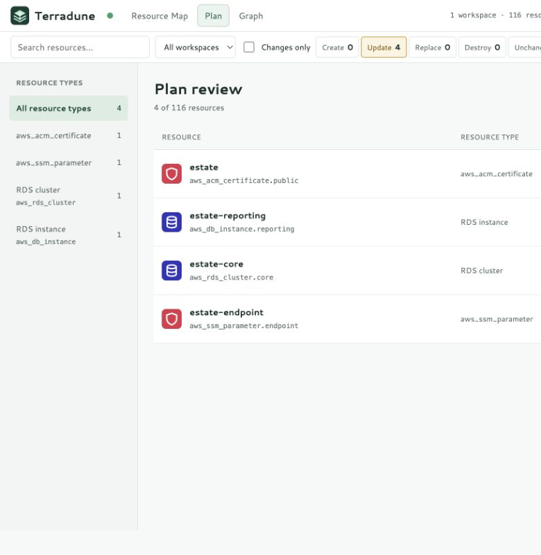
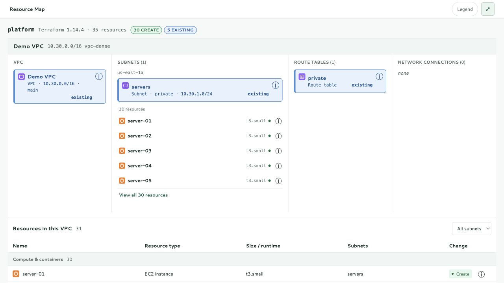

RELEASE NOTES
Terradune v1.0.5
Latest release
- Plan resource types and counts follow action, search, workspace and changes-only filters.
- What changes shows explicit Before and After values, including attached resources, unknown values and replacements.
- Compact VPC resource cards, shorter subnet previews and collapsible filters leave more room for the map.
- Single-click preserves the map; double-click focuses dependencies while retaining VPC and subnet sections. Connections are masked behind card interiors.
Install with Go GitHub release

Terradune v1.0.4
- Changes-only keeps changed routes, associations, rules, and attachments visible alongside their unchanged topology. Connection details include previous values.
- Dense subnets use compact resource previews with access to the full subnet-filtered inventory.
- Grouped VPC inventory includes compute and containers, databases and caches, storage, networking, security, and other resources with known VPC placement.
- Natural sorting and preserved focus, selection, and scrolling improve review of larger plans.
Install with Go GitHub release

Terradune v1.0.3
- Plan filters keep EC2 instances, VPCs, subnets, and every other resource type separate.
- Resource Map connections use teal filled circles for direct dependencies and blue hollow circles for indirect associations.
- Go is the sole supported installation method, with setup steps for macOS, Linux, and Windows.
Install with Go GitHub release
Terradune v1.0.2
Correctly pairs for_each route-table associations with their subnets before apply. Subnets with no known association no longer claim to be private.
Terradune v1.0.1
OpenTofu fallback, keyboard-focus preservation during live updates, and automated browser/accessibility coverage across Chromium, Firefox, and WebKit.
Terradune v1.0.0
The first stable local plan-review workflow: Resource Map, Plan, Graph, sensitive-value masking, bounded planning, and graceful shutdown.
Stable v1 defines a supported review workflow, not complete Terraform lifecycle parity. Read the compatibility boundary before adopting it.